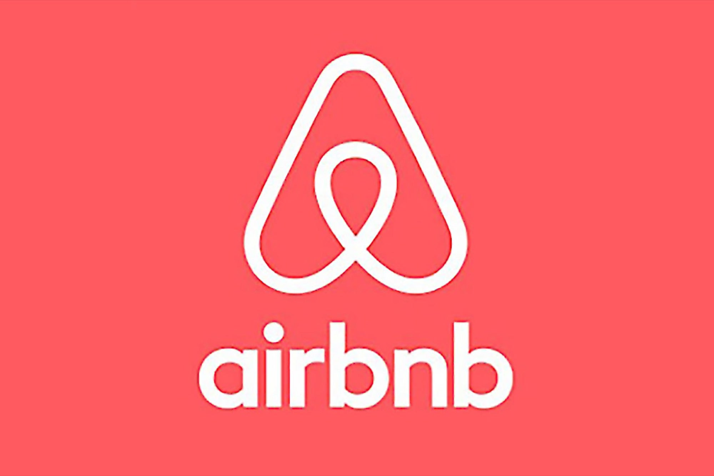
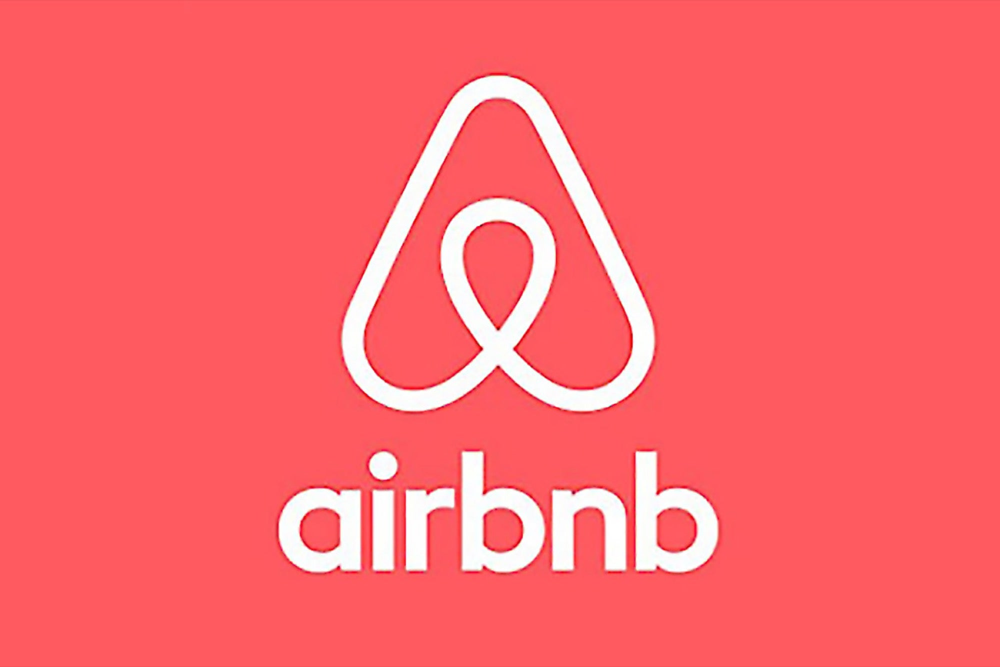

Intro to Web Dev/HTML
Kevin Schoonover
What is Web Development
A form of software development focused on building web applications ordinarily run on web browsers
Unorthodox Examples
 

Why is web development interesting?
- Extremely fast moving space
- High adoption easily
- Very complex/featureful interactions
- Majority of people interact through apps/websites
Challenges

Challenges
- Large learning curve
- Keeping up-to-date in a very rapid space
- Wide variety of browsers / screen sizes / dpis
What is a Browser
Application that fetches data/code (usually HTML, CSS, and JS) from a web server and render the data/code for the user.
Demo 1
Browser Differences
HTML 101
HTML = Hypertext Markup Language